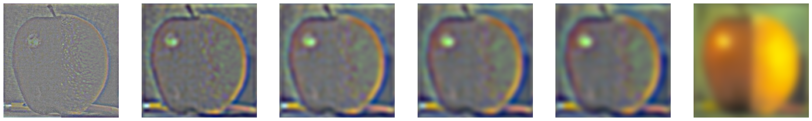

Overview
We took this project as an opportunity to use filters and frequencies towards creating hybrid images, finding edges, and, sharpening and blending images.
Part 1: Fun with Filters
1.1: Finite Difference Operator
1. To find the partial derivatives I convolved the image with Dx = [-1 1] and Dy = [1 -1].T using scipy.signal.convolve2d .
Gradient x
Gradient y
Gradient Magnitude
Edges
1.2: Derivative of Gaussian (DoG) Filter
Approach 1: 1. Create gaussian. I chose sigma to be 2. 2. Blurred the image by convolving it with the gaussian filter using convolve2d

Blurred cameraman with gaussian filter (sigma = 2)

Gradient x

Gradient y
Gradient Magnitude
Edges
Difference in results: The edges are wider and clearer. The edges ignore some details that where visible in previous edges.
Approach 2: Difference in approach: Convolved first the gaussian filter with the Dx and Dy and then applied it to the Blurred Image. Difference in results: Almost identical except for a couple of small points. The edges of this approach appear to be a bit wider.
Gradient x
Gradient y
Edges
Gradient x
Gradient y
Gradient Magnitude
Edges
Part 2: Fun with Frequencies!
2.1: Image Sharpening
Taj Mahal
Blurred Version

Sharpened Version
Blue House
Blurred Version

Sharpened Version
2.2: Hybrid Images
Derek The Cat
Basic example.
Camel Lion

Riding Lions in Egypt!
A Firework Tree

Failure: Although you can see both, the fireworks do not fit well enough to merge them with the tree leaves (I tried :( )
My Favorite: Finding Real Life Edna Moda
Hybrid
Frequency Analysis
Frequencies Edna Moda
Frequencies Linda Hunters
Frequencies Low Pass (Linda Hunters)
Frequencies High Pass (Edna)
Frequencies Combined!
2.3: Gaussian and Laplacian Stacks
Progress of Stacks
Progress of Apple
Progress of Orange

The Magic Oraple!
2.4: Multiresolution Blending (a.k.a. the oraple!)
Finally the Oraple !
Wao!